Your bookmarks, front and center.
A free, open-source new tab for Firefox and Chrome.

Pick a look
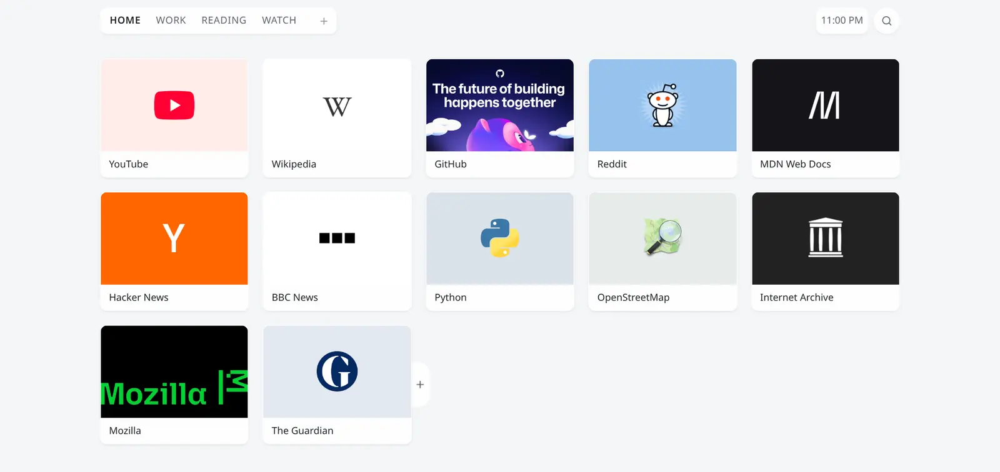
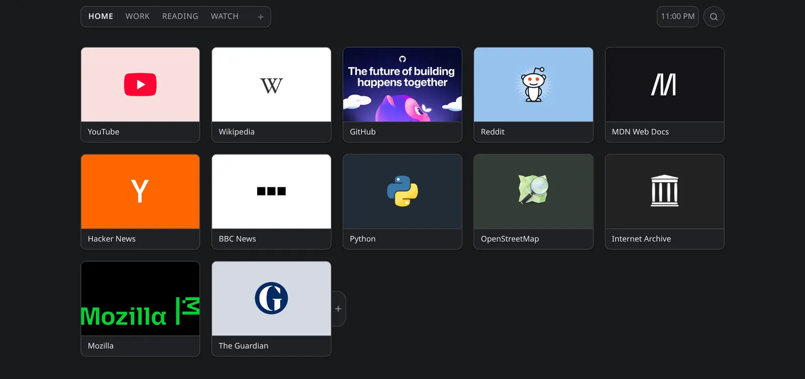
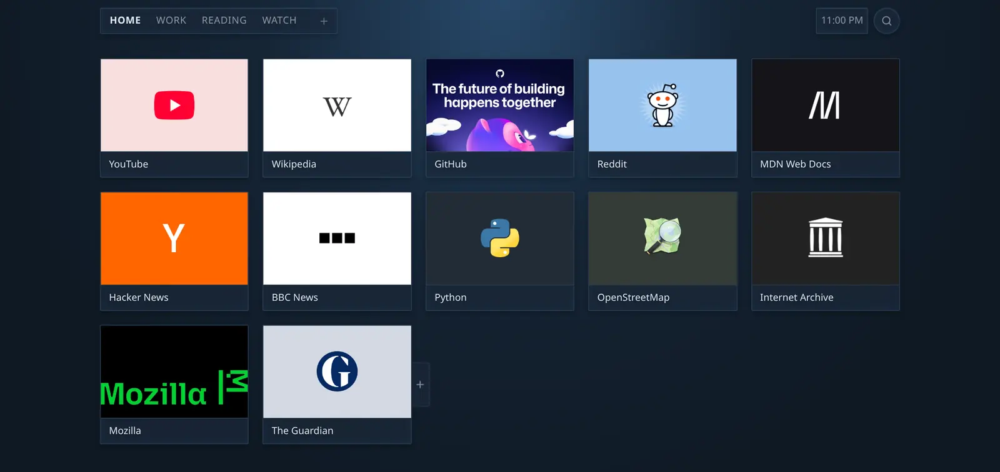
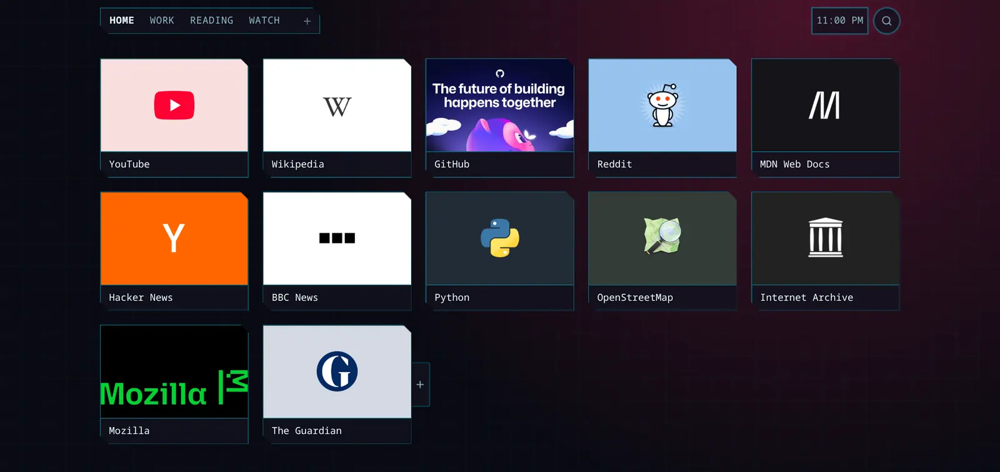
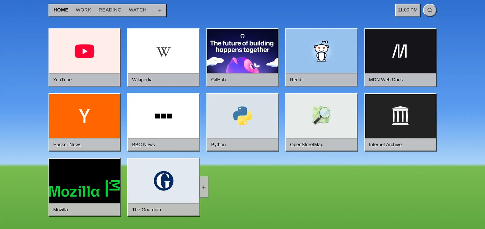
Any wallpaper
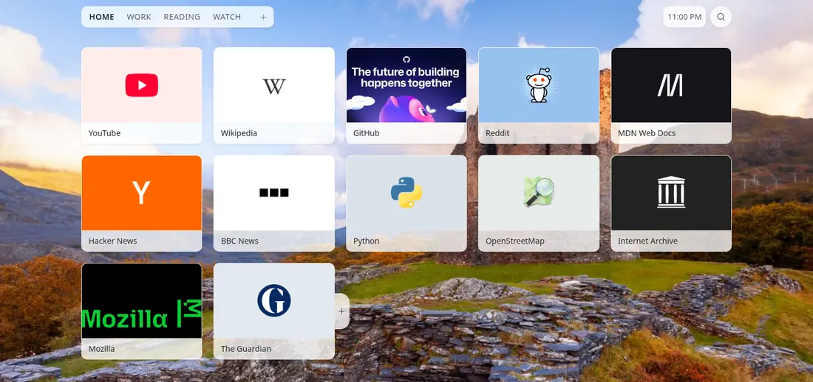
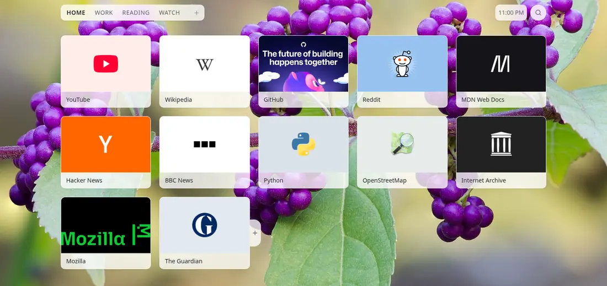
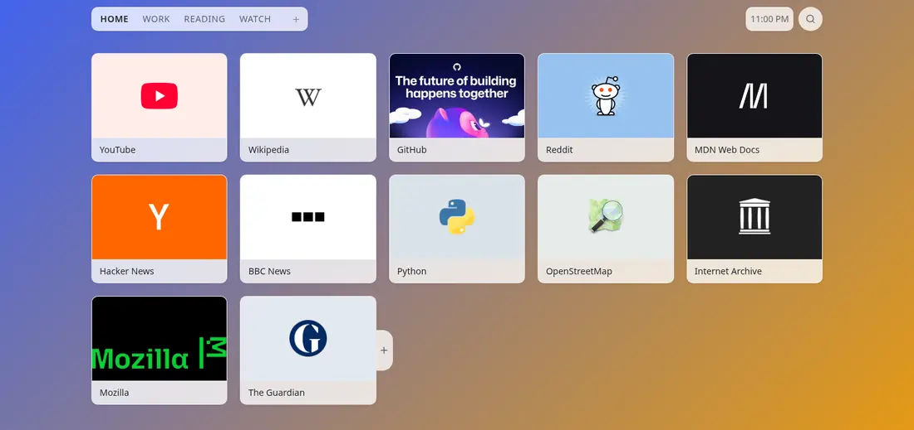
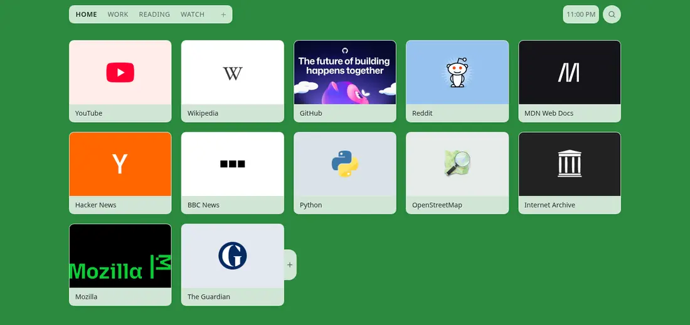
Or your own photo, or a daily one from Unsplash.
Choose each tile's picture


Everyday use


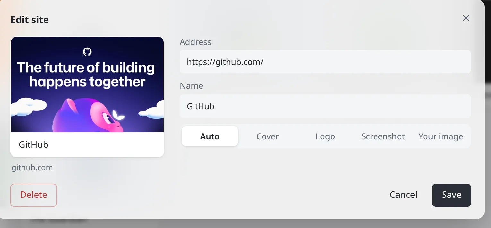
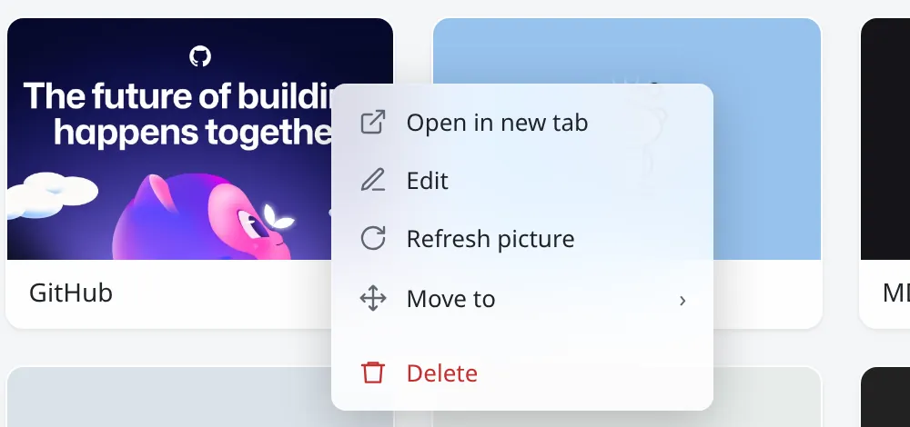
Phone to ultrawide


Up to 10 columns, sharp on HiDPI. Your 49-inch ultrawide finally has something worth looking at.
Hands on the keyboard
- /Search
- hjklMove
- ←↑↓→Move
- EnterOpen
- EscClose
- ?All shortcuts
- Controller too
Yes, there are Vim keys. hjkl, as the ancestors intended. Everyone else, the arrow keys were never wrong.
No ads. No bloat. Just your sites.
- No ads
- No tracking
- No account
- ~70 KB
Nothing collected. The only requests are the wallpaper and tile pictures you turn on. Privacy policy